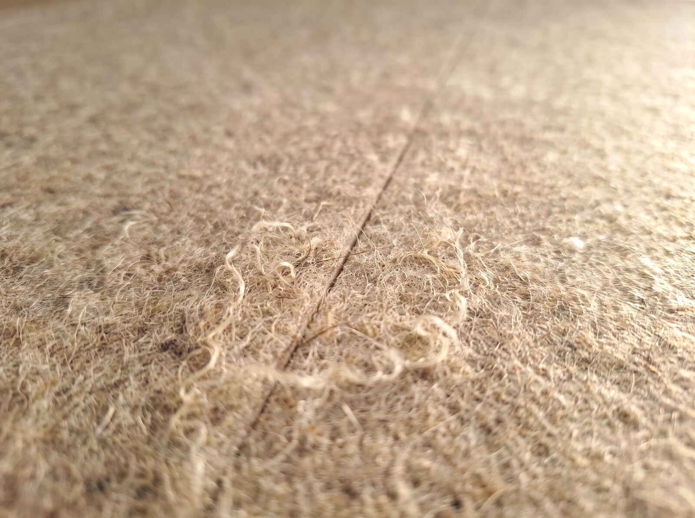
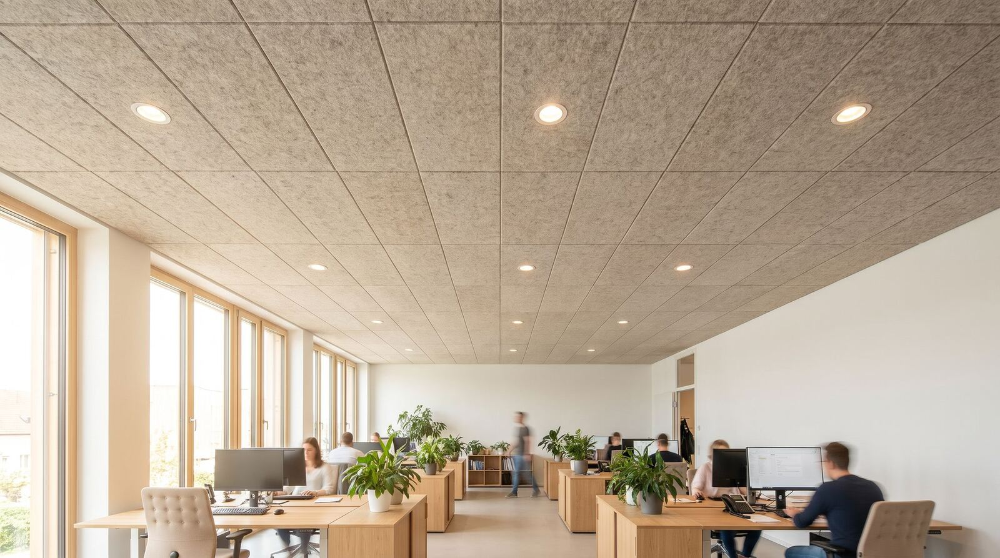
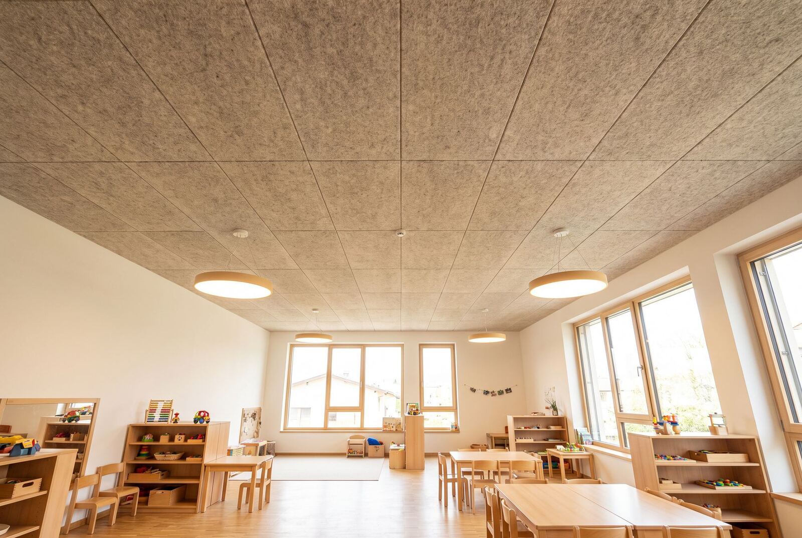
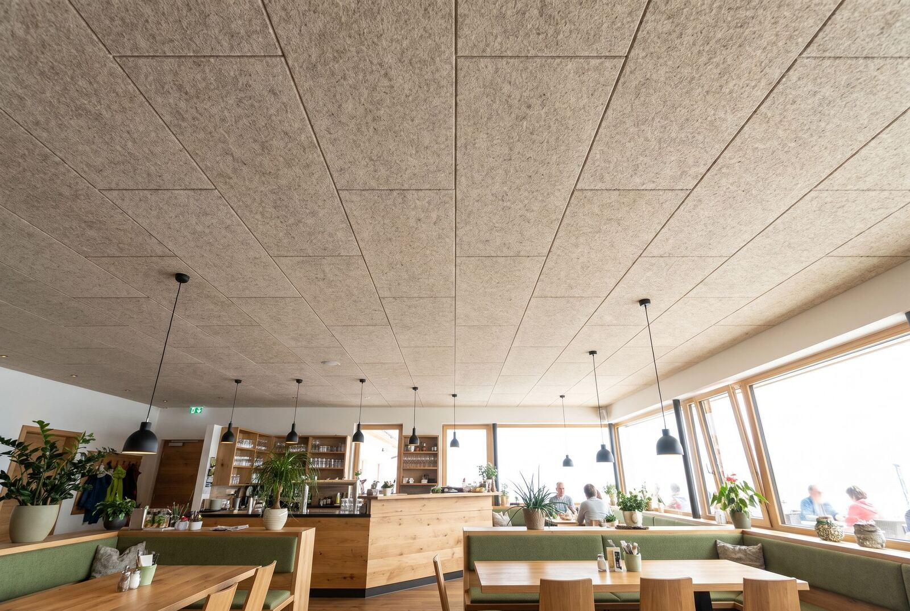

Produkte / Natur Akustikdecke
Vollflächige Akustikdecke · in Entwicklung
Natur Akustikdecke
Eine Akustikdecke aus Schafwolle ohne sichtbaren Rahmen: Der Silentum® Filz liegt flächig an der Decke, und Leitungen und Installationen verschwinden dahinter.

Ganze Decke
Die größte Fläche im Raum wird zum Tiefenabsorber, αw 0,7 bei 200 mm Hohlraum.
Zwei Formate
1200 × 1000 mm und 1200 × 600 mm, rahmenlos.
Wie Gipskarton
Montage auf CD-Profilen oder Holzleisten. Schrauben liegen bei.
Trägerplatte A2
Gipskartonplatte nicht brennbar, Schafwolle C-s2-d0 nach EN 13501-1.

Design
Eine Decke ohne Rahmen
Ohne Rahmen füllt die Wolle die ganze Fläche. Die Decke wirkt ruhig und weich und passt in viele Räume.
- 9 mm Silentum® Schafwollfilz auf Gipskartonplatte
- Naturfarben Stone, Creme, Wood und Origin
- Runde LED-Einbauleuchten ohne Mehraufwand möglich
Aufbau
Wolle auf Gipskarton
Silentum® Schafwollfilz, 9 mm
Sichtseite der Decke, auf die Trägerplatte kaschiert. 100 % Naturprodukt mit Natura-Plus-Zertifikat.
Gipskartonplatte
Aus Deutschland. Brandklasse A2, Finnisches Emissionslabel M1, ISO 14001 zertifiziert, EPD vorhanden.
Unterkonstruktion
Wie bei einlagigen Gipskartondecken mit CD-Profilen und Noniusabhängern oder mit Holzleisten. Nicht im Produkt enthalten.
Montage
Wie eine Gipskartondecke
Montieren kann Ihr Trockenbauer oder das Team von ZIEGLER SCHALLSCHUTZ.
Unterkonstruktion
CD-Profile mit Noniusabhängern oder Holzleisten, bestellt über den Trockenbau-Fachhandel.
Platten setzen
Die Akustikplatten liegen mit allen Kanten auf der Unterkonstruktion.
Verschrauben
Senkkopfschrauben für Holz oder Metall liegen im Lieferumfang bei.
Leuchten
Optional runde LED-Einbauleuchten in 3000 K oder 4000 K.
| Absorber | 9 mm Silentum® Schafwollfilz kaschiert auf Gipskartonplatte |
|---|---|
| Standardformate | 1200 × 1000 mm, 1200 × 600 mm |
| Schallabsorption | Klasse C, αw 0,7 bei 200 mm Hohlraumtiefe, Tiefenabsorber |
| Gewicht | ca. 9 kg/m² |
| Brandklasse | Gipskartonplatte nicht brennbar A2, Silentum® Schafwolle schwer entflammbar C-s2-d0 nach EN 13501-1 |
| CO₂-Emissionen | GWP total ca. 1,25 kg CO₂e/m², GWP fossil ca. 3,3 kg CO₂e/m² |
| Unterkonstruktion | Wie einlagige Gipskartondecke: verzinkte CD-Profile mit Noniusabhängern oder Holzleisten, nicht im Produkt inkludiert |
| Befestigung | Senkkopfschrauben für Holz/Metall im Lieferumfang |
| Leuchten | LED-Einbauleuchten: 3000 K oder 4000 K, Ø 170 mm (430 lm) oder Ø 225 mm (1530 lm), Effizienzklasse A++, Ra > 80, IP 20 |
| Naturfarben | Stone, Creme, Wood, Origin |
Absorption je Frequenz
Schallabsorptionsgrad αs je Oktavband, Hohlraumtiefe 200 mm, bezogen auf die einseitige Absorberfläche. Angaben gelten laut Bedingungen und Aufbau im jeweiligen Prüfzeugnis.
Anwendungen
Wo die Akustikdecke passt
Büros, Foyers, Besprechungs- und Veranstaltungsräume, Musikräume, Schulen, Wohnräume, Hotelzimmer, Shopping Center, Geschäftsräume und Gastronomie.



Häufige Fragen
Gut zu wissen
Gibt es die Akustikdecke auch als Light-Variante?
Nein. Die Natur Akustikdecke wird mit Gipskartonplatte gefertigt, damit sie gute Schallabsorptionswerte und Brandschutz verbindet. Eine Variante Light gibt es bei Deckensegel und Wandabsorber.
Ist die Unterkonstruktion enthalten?
Nein. Sie bestellen sie gesondert im Trockenbau-Fachhandel. Die Senkkopfschrauben für die Platten sind im Lieferumfang enthalten.
Eignet sich die Decke zur Nachrüstung?
Ja, für Neubauten und für bereits eingerichtete Räume.
Lassen sich Leuchten integrieren?
Ja. Runde LED-Einbauleuchten sind in 3000 K (warmweiß) und 4000 K (neutralweiß) erhältlich.
Muster
Wolle und Farbe prüfen
Wir schicken Ihnen Muster der Silentum® Schafwolle in den Naturfarben, damit Sie vor der Planung Haptik und Farbton sehen.
Muster anfordern